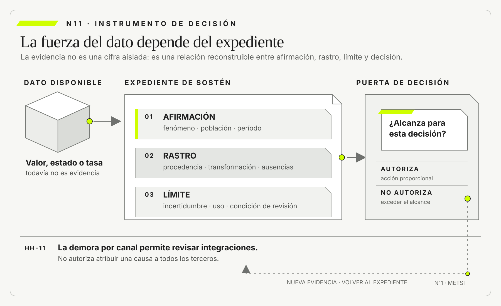

George Box
Empirical Model-Building and Response SurfacesWiley · 1987
Mostró que todo modelo selecciona y simplifica, por lo que debe juzgarse por su utilidad para una pregunta y no por una semejanza absoluta con el fenómeno.

Un dato sostiene una afirmación cuando conserva fenómeno, población, reglas, transformaciones y decisión.
Cuándo un dato permite sostener una afirmación
Ruta priorizada: 1 h 20 min a 1 h 40 min. Núcleo de lectura: 60 a 75 min; preparación: 20 a 25 min. Las extensiones agregan 30 a 45 min y profundizan el recorrido.

Nota. SIN NUM. identifica aparatos de orientación y referencia.
Seis referentes y las obras principales utilizadas para construir N11.
Mostró que todo modelo selecciona y simplifica, por lo que debe juzgarse por su utilidad para una pregunta y no por una semejanza absoluta con el fenómeno.

Coescribió la guía vigente de NIST para identificar, seleccionar y evaluar medidas de seguridad de la información.

Sistematizó el marco de error total para distinguir problemas de representación y medición en encuestas.

Mostró que la adecuación de los flujos de información depende de contexto, actores, atributos y normas de transmisión, una advertencia útil para no separar calidad de legitimidad.

Lideró la elaboración del NIST AI RMF, que integra medición, documentación y gobierno de riesgos de inteligencia artificial.

Volvió visibles los daños que producen modelos opacos cuando sus medidas, objetivos y asimetrías de poder quedan fuera de discusión.
N11 no resume estas fuentes ni las convierte en receta. Las pone en tensión para construir juicio profesional.
¿Qué necesita conservar un dato para servir como evidencia y no quedar reducido a una cifra disponible?

La exactitud es necesaria, pero no alcanza para volver pertinente, suficiente y vigente una evidencia.
Una universidad implementa un nuevo sistema para gestionar solicitudes estudiantiles. El objetivo declarado es sencillo: responder más rápido. Tres meses después, el tablero informa que el noventa y siete por ciento de los trámites se resolvió dentro del plazo. La cifra aparece en la reunión de autoridades, en una presentación al consejo y en el informe del proveedor. El proyecto parece exitoso.
Una coordinadora pregunta cómo se calculó el indicador. El analista abre la consulta. El numerador cuenta solicitudes que pasaron al estado “cerrada” antes de cinco días hábiles. El denominador incluye todas las solicitudes creadas durante el mes. La regla parece clara, hasta que otra persona pregunta qué significa “cerrada”. En algunas oficinas indica que el trámite terminó. En otras, que fue derivado a otra unidad.
En una tercera, que se envió una respuesta automática solicitando documentación adicional. El mismo estado técnico representa tres situaciones distintas.
La coordinadora toma una muestra de expedientes. Encuentra solicitudes cerradas y reabiertas al día siguiente, estudiantes que presentaron dos veces el mismo pedido porque no recibieron confirmación y casos que quedaron fuera del cálculo al ingresar por correo electrónico. También descubre que el plazo comienza cuando una oficina registra la solicitud, no cuando el estudiante la envía. Durante los fines de semana largos, parte de la espera desaparece del indicador.
Nada de esto vuelve falsa la cifra. El sistema realmente registró que el noventa y siete por ciento de ciertas filas alcanzó cierto estado dentro de cierto intervalo. El problema aparece al convertir esa descripción en otra afirmación: “la universidad responde los trámites a tiempo”. Entre ambas frases hay decisiones de representación, selección, significado y cálculo. La segunda habla de una experiencia institucional; la primera, de eventos almacenados bajo reglas particulares.
El proveedor propone corregir el tablero. Podría excluir reaperturas, unificar estados, integrar el correo y medir desde la recepción original. La mejora sería valiosa, pero tampoco produciría un dato neutro. Habría que decidir si una solicitud incompleta forma parte del universo, si el tiempo del estudiante cuenta, cómo tratar duplicados, qué significa resolver y qué desigualdades puede ocultar un promedio. Cada definición cambia la afirmación que el indicador permite sostener.
La discusión se vuelve más incómoda cuando aparece una decisión concreta. La universidad evalúa reducir personal de atención porque el tablero sugiere que el nuevo sistema absorbió la demanda. Para explorar una mejora local puede alcanzar una señal imperfecta. Para retirar una capacidad de reparación se necesita evidencia más fuerte. El mismo dato cambia de valor porque cambia la consecuencia de equivocarse.
Un equipo reconstruye entonces la cadena completa. Identifica la situación que se quiere conocer, la unidad observada, la población incluida, la ventana temporal, las reglas de captura, las transformaciones, las excepciones y la decisión asociada. Compara el indicador con episodios reales y pregunta qué casos no pueden aparecer en la base.
El noventa y siete por ciento deja de funcionar como veredicto y comienza a funcionar como una afirmación limitada: “entre las solicitudes registradas en el nuevo sistema, el noventa y siete por ciento alcanzó un estado denominado cerrada dentro de cinco días hábiles, aunque el significado del estado y la cobertura de canales todavía impiden inferir resolución efectiva”.
La nueva frase es menos elegante y más útil. No niega el avance ni invalida el tablero. Declara qué se sabe, qué no se sabe y qué puente falta construir antes de decidir. También permite formular acciones diferentes: corregir la semántica de estados, incorporar canales omitidos, observar reaperturas, comparar grupos y posponer la reducción de atención hasta comprender la demanda que el sistema no ve.
Esta historia no enseña que toda métrica engañe ni que sea necesario auditar cada celda antes de actuar. Enseña que los datos no sostienen afirmaciones por acumulación. Lo hacen cuando existe una relación defendible entre aquello que se quiere afirmar, la manera en que fue representado, la población a la que se refiere, las transformaciones realizadas y la decisión que se pretende tomar.
Hotel Horizonte cerró N10 con un encuadre provisional. La situación prioritaria no era simplemente “el PMS es viejo” ni “hay sobreventas”. El argumento vinculó la falta de confiabilidad de algunos ingresos con promesas fragmentadas que el personal debe reconstruir y autorizar cuando discrepan disponibilidad, pago o identidad. También fijó una protección: reducir el tiempo hasta una decisión correcta no puede aumentar asignaciones erróneas, exclusión, exposición de datos ni trabajo de reparación.

Para N11, Federico Müller prepara una extracción de tres meses. El tablero muestra que las reservas de terceros demoran, en promedio, once minutos más que las directas. También indica que el treinta y dos por ciento de las llegadas de terceros requiere alguna corrección, frente al nueve por ciento de las reservas directas. La diferencia parece confirmar que el canal produce el problema.
Lucía Ferreyra observa otra cosa. Recepción sólo registra una “corrección” cuando modifica la reserva en el PMS. Las llamadas a Comercial, las consultas a Housekeeping y las explicaciones al huésped no poseen un código común. Algunas reservas directas se reparan antes de la llegada y nunca aparecen como incidente. En cambio, muchas reservas de terceros ingresan automáticamente a una cola específica y dejan más rastros. El tablero podría estar comparando procesos con distinta visibilidad, no solamente experiencias con distinta calidad.
La pregunta de N11 no es si Federico o Lucía tienen razón. Es qué afirmaciones permite sostener la extracción actual, cuáles exceden su alcance y qué información adicional cambiaría una decisión. El caso exige pasar del dato disponible al dato defendible.
Un dato sirve para sostener una afirmación cuando podemos reconstruir qué representa, a qué población y período se refiere, cómo fue producido, qué transformaciones recibió y para qué decisión resulta suficiente. La exactitud suele ser necesaria, pero no alcanza. Un valor puede estar bien registrado y ser irrelevante, incompleto, desactualizado, sesgado o incompatible con lo que se quiere afirmar.
La fuerza de la evidencia no reside en el formato del dato ni en su apariencia cuantitativa. Depende del tipo de afirmación, de las explicaciones rivales, de los errores plausibles y del costo de equivocarse. Una observación aislada puede refutar una afirmación universal, aunque no estime una frecuencia. Un promedio estable puede describir una población, aunque no explique un mecanismo. Una correlación puede orientar una investigación, aunque no autorice atribuir causalidad.
Modelar sólo lo que ayuda a decidir implica rechazar dos extremos. El primero es la confianza automática en cualquier cifra extraída de un sistema. El segundo es exigir certeza total antes de actuar. Entre ambos, METSI propone construir expedientes de sostén proporcionales: suficientes para una decisión concreta, explícitos sobre sus límites y capaces de ser revisados cuando aparece nueva evidencia.
Un dato se vuelve evidencia para una decisión sólo cuando un expediente reconstruible delimita la afirmación, conserva su rastro y declara el alcance que autoriza.

N10 construyó un problema provisional mediante situación, afectados, outcomes, mecanismos rivales, fronteras, restricciones, protecciones y condiciones de revisión. Ese encuadre no debía fingir certeza. Debía identificar qué relaciones merecían ser investigadas y qué puerta de decisión podía abrirse con la evidencia disponible.
N11 recibe esas relaciones como afirmaciones por auditar. “Las reservas de terceros requieren más reparación”, “la demora se concentra en ciertas ventanas”, “dos áreas usan el mismo estado con significados distintos” y “la carga afecta de manera desigual a quienes necesitan asistencia” son afirmaciones diferentes. No requieren el mismo dato ni admiten la misma prueba.
N04 ya distinguió observación, dato, síntoma, interpretación, hipótesis y decisión. Su unidad fue la cadena argumental dentro de una investigación. N11 retoma esa disciplina desde la representación: examina qué debió ocurrir para que un fragmento del mundo se convirtiera en una celda, una categoría, una tasa o un modelo, y qué se pierde en ese pasaje. No repite la taxonomía de N04. Profundiza el vínculo entre medición, calidad, procedencia y suficiencia.
El producto de esta lectura será HH-11, un expediente de sostén para tres afirmaciones de Hotel Horizonte. El artefacto no reemplaza la base, el tablero ni la investigación cualitativa. Hace visible la cadena mínima que permite usar un dato para decidir. N12 recibirá luego eventos, estados, comandos, evidencia y autoridad para distinguir qué ocurrió, qué situación se representa y quién puede habilitar una transición. N11 no anticipa ese modelado. Deja declaradas las preguntas que cada representación deberá responder.
Un dato es una representación producida bajo reglas. Puede adoptar la forma de número, categoría, texto, imagen, marca temporal, vínculo o ausencia registrada. En todos los casos selecciona alguna propiedad y descarta otras. La temperatura indicada por un sensor no es el ambiente; una reserva con estado “confirmada” no es la promesa completa; una respuesta en una encuesta no es la experiencia entera de una persona.
Esta distinción no reduce el valor de los datos. Lo vuelve analizable. Si el dato fuera el fenómeno mismo, no habría que preguntar quién lo produjo, con qué instrumento, en qué momento ni para qué propósito. Como es una representación, esas preguntas determinan su alcance.
La norma ISO/IEC 25012 define calidad de datos en relación con necesidades y condiciones de uso. Esa formulación impide hablar de calidad como una propiedad absoluta. Una dirección correctamente escrita puede ser adecuada para emitir una factura y no alcanzar para coordinar una asistencia accesible. Un tiempo de respuesta medido al milisegundo puede servir para diagnosticar una API y no representar la espera de una persona que atravesó cinco pasos manuales.
La tradición de Wang y Strong llegó a una conclusión convergente desde la perspectiva de quienes usan información: la calidad no se reduce a exactitud. Incluye dimensiones intrínsecas, contextuales, representacionales y de accesibilidad. METSI toma esa idea como advertencia metodológica. Antes de limpiar o completar datos, se debe saber qué afirmación y qué decisión deberán sostener.
George Box y Norman Draper ofrecen una cautela complementaria: un modelo no conserva el mundo completo, sino una simplificación cuyo valor depende de la pregunta y del uso. En N11 esa idea no habilita cualquier aproximación. Obliga a declarar qué parte del fenómeno se omitió y por qué la representación sigue siendo suficiente para la decisión delimitada.
“Ayer una huésped esperó cuarenta minutos” es una afirmación singular. Puede sostenerse con el expediente correspondiente, una marca temporal confiable y un criterio claro sobre cuándo comenzó y terminó la espera. “Las personas esperan cuarenta minutos” es una afirmación sobre una población. Requiere cobertura suficiente y una medida que no seleccione únicamente los casos visibles. “Las reservas de terceros provocan la espera” es una afirmación causal. Además de describir una asociación, debe enfrentar mecanismos rivales y diferencias previas entre grupos.
La forma gramatical puede ocultar este cambio. Un tablero titulado “demora por canal” parece descriptivo, pero una reunión puede leerlo como explicación. La frase “los casos con más pasos tardan más” puede nombrar una regularidad o sugerir que eliminar pasos reducirá la demora. La segunda interpretación necesita saber si esos pasos son causa de la espera o respuesta a casos ya complejos.
Conviene distinguir al menos seis tipos de afirmación:
No forman una escalera en la que cada nivel sea siempre superior. Una afirmación de existencia puede ser decisiva si revela un daño que una regla declaraba imposible. Una descripción puede bastar para asignar personal. Una predicción precisa puede no explicar causas y, aun así, organizar una cola, siempre que sus errores y consecuencias estén gobernados. El tipo de afirmación determina qué evidencia corresponde exigir.
Muchas propiedades importantes no se observan directamente. “Confiabilidad del ingreso”, “calidad de servicio”, “adopción”, “riesgo” y “complejidad” son constructos: conceptos que organizan varias observaciones posibles. Para trabajar con ellos se necesita una operacionalización, es decir, una regla que indique qué señales se tomarán como representación.
En Hotel Horizonte, la confiabilidad del ingreso podría operacionalizarse como proporción de llegadas que completan identificación, asignación y acceso dentro de una ventana acordada sin corrección posterior. Otra definición podría medir únicamente la entrega de la llave. Ambas producen números legítimos, pero representan promesas distintas. Si una habitación se asigna rápido y luego debe cambiarse, la segunda definición registra éxito y la primera, falla.
La operacionalización contiene teoría. Decide qué cuenta como caso, qué evento inicia el reloj, qué resultado lo detiene, qué excepciones se incluyen y qué daños importan. Por eso no puede evaluarse sólo con una consulta técnica. Se contrasta con episodios reales, lenguaje de quienes trabajan, propósito de la decisión y casos límite.
Un indicador puede ser confiable y no ser válido. Confiabilidad significa que el procedimiento produce resultados consistentes bajo condiciones comparables. Validez significa que la medida representa adecuadamente el concepto que se pretende conocer para el uso declarado. Una balanza que suma siempre tres kilos es consistente y equivocada. Un código “caso cerrado” aplicado de manera uniforme puede ser confiable como registro de una acción administrativa y no válido como medida de resolución para la persona afectada.
Toda afirmación cuantitativa necesita responder cuatro preguntas antes del cálculo.
La primera es la unidad de análisis. ¿Se cuentan reservas, huéspedes, habitaciones, estadías, llegadas, correcciones o episodios de coordinación? Una reserva puede incluir cuatro huéspedes y atravesar tres correcciones. Mezclar unidades produce denominadores que parecen compatibles y no lo son.
La segunda es la población. ¿La afirmación se refiere a todas las llegadas, sólo a las registradas por el PMS, a temporada alta o a reservas que llegaron por agencias? La cobertura no se deduce del tamaño de la tabla. Una base con millones de filas puede omitir sistemáticamente el canal donde ocurre el problema.
La tercera es la ventana temporal. ¿Se describe un día, tres meses, el último estado disponible o la secuencia completa? Elegir el período después de mirar el resultado permite exagerar o suavizar variaciones. Comparar julio con noviembre puede confundir canal, demanda, dotación y política comercial.
La cuarta es la granularidad. Un promedio mensual puede ocultar picos de treinta minutos en los que el sistema incumple precisamente cuando más importa. Un registro por segundo puede ser demasiado fino para la decisión y aumentar ruido sin mejorar comprensión. La granularidad adecuada es la que conserva el patrón relevante para actuar.
Estas decisiones deben preceder al tablero. Cuando aparecen después, suelen funcionar como defensa retrospectiva del resultado.
Una tasa relaciona un numerador con un conjunto de oportunidades. “Treinta y dos por ciento de correcciones” no significa nada hasta saber qué se contó como corrección y qué ingresó al denominador. Si se divide por reservas creadas, por llegadas efectivas o por habitaciones ocupadas, la cifra cambia y también cambia su interpretación.
Considérese un día con cien reservas. Diez se cancelan antes de llegar, cinco se fusionan porque estaban duplicadas y ochenta y cinco producen una estadía. Hay doce modificaciones en el PMS, pero cuatro corresponden a actualizaciones de preferencia sin conflicto. La tasa puede ser doce sobre cien, doce sobre ochenta y cinco, ocho sobre ochenta y cinco o una medida por huésped. Ninguna opción es neutral. Cada una responde una pregunta distinta.
Los denominadores ausentes producen afirmaciones espectaculares. “Los incidentes aumentaron un cincuenta por ciento” podría describir el pasaje de dos a tres casos, mientras el volumen total se duplicó. “El canal concentra la mitad de las quejas” no informa si concentra también la mitad de las reservas. La auditoría debe reconstruir la oportunidad de ocurrencia, no solamente contar eventos.
La calidad de un dato se evalúa contra la afirmación y la decisión. Entre las dimensiones más frecuentes aparecen exactitud, completitud, consistencia, actualidad, unicidad, validez de formato, accesibilidad y relevancia. No todas pesan igual en cada caso.
Para contactar a una persona por una contingencia, la actualidad de un teléfono puede ser más importante que la normalización perfecta de su domicilio. Para conciliar cobros, la unicidad y la correspondencia entre identificadores resultan críticas. Para comparar tiempos entre canales, la definición común del inicio y el final pesa más que agregar decimales.
Esta mirada evita dos errores. El primero es iniciar un programa de “calidad total” sin una decisión prioritaria. El trabajo se vuelve infinito porque siempre existe otra celda por corregir. El segundo es aceptar cualquier defecto con el argumento de que ningún dato es perfecto. La suficiencia no es indulgencia: exige demostrar que los errores plausibles no cambian materialmente la decisión.
La guía de medición NIST SP 800-55 Volumen 1, elaborada por Katherine Schroeder, Hung Trinh y Victoria Pillitteri en 2024, advierte que deben definirse métodos de recolección y repositorios para evaluar calidad y validez, además de documentar incertidumbre.
NIST RDaF 2.0 agrega una perspectiva de ciclo de vida: la calidad no surge de un control único, sino de acciones distribuidas desde la planificación hasta la preservación y el reúso. Aunque ambas guías provienen de dominios específicos, el principio se transfiere: una medida no se vuelve defendible por aparecer en un programa formal. Debe mostrar cómo fue construida y qué error puede contener.
El equipo formula tres afirmaciones a partir de la extracción inicial.
Afirmación A: “Durante los últimos tres meses, las llegadas registradas como provenientes de terceros tuvieron mayor tiempo medio entre el inicio formal del check-in y la entrega de acceso que las reservas directas”. Es una comparación descriptiva. Puede sostenerse si ambos grupos utilizan marcas temporales equivalentes, la población está definida, el canal está correctamente clasificado y se informan distribución y casos excluidos.
Afirmación B: “Los canales de terceros causan la demora de ingreso”. Es causal. La misma extracción no alcanza. Los grupos pueden diferir en anticipación del pago, documentación, asistencia requerida, horario de llegada o complejidad. También podría ocurrir que el canal deje más trazas y haga visible trabajo que en reservas directas se resuelve por fuera.
Afirmación C: “Automatizar la conciliación con un agente de inteligencia artificial reducirá la demora sin aumentar errores”. Es una afirmación prospectiva sobre una intervención. Necesita especificar tarea, condiciones, línea de base, mecanismos, errores aceptables, autoridad y protección. Los datos actuales pueden justificar explorar la idea, pero no prometer su resultado.
La extracción no cambia; cambia la carga de prueba. HH-11 registra entonces que A puede sostenerse con reservas, B permanece como hipótesis y C sólo autoriza una prueba limitada. Esta diferencia evita que la fluidez de un tablero convierta una correlación en causa y una causa supuesta en compra.
La procedencia describe de dónde proviene un dato, qué actividades lo transformaron y qué personas o sistemas intervinieron. El W3C Provenance Working Group organiza esta relación mediante entidades, actividades y agentes. Su modelo conceptual, editado por Luc Moreau y Paolo Missier, permite representar generación, derivación, atribución y uso. No obliga a adoptar una tecnología particular. Ofrece un vocabulario para que una organización pueda reconstruir responsabilidad y versión.

En Hotel Horizonte, el valor “canal = tercero” puede provenir de una reserva recibida por una agencia, transformarse durante una consolidación nocturna y ser corregido manualmente por Recepción. Si el tablero conserva sólo el valor final, no permite saber cuándo cambió ni bajo qué regla. La procedencia no garantiza verdad, pero vuelve evaluable la historia del dato.
Conviene distinguir fuente, custodia, transformación y autoridad. La fuente originó una observación o declaración. La custodia almacenó o transmitió el registro. La transformación produjo una nueva representación. La autoridad determinó qué significado o efecto institucional se reconoce. Un proveedor puede custodiar un estado sin tener autoridad para declarar una habitación entregable.
La trazabilidad completa no siempre es necesaria. Para una exploración reversible puede alcanzar una muestra con reglas conocidas. Para liquidar pagos, rechazar una reserva o entrenar un modelo que afectará a miles de personas, la cadena debe ser más fuerte. La profundidad de la procedencia también es proporcional al compromiso.
Los datos rara vez llegan al tablero tal como fueron capturados. Se limpian, unen, deduplican, clasifican, agregan, imputan y filtran. Cada operación resuelve un problema y puede introducir otro.
Unir tablas por correo electrónico puede asociar historiales, pero confunde personas que comparten dirección o utilizan varias. Deduplicar por nombre y fecha puede eliminar reservas legítimas. Imputar una hora faltante con la mediana permite calcular un promedio, aunque inventa una precisión que no existía. Clasificar comentarios con un modelo reduce trabajo manual, pero incorpora errores cuya distribución debe conocerse.
Por eso una transformación debe declarar al menos entrada, regla, versión, fecha, salida y casos rechazados. Cuando una regla cambia, las series anteriores pueden dejar de ser comparables. Un tablero que recompone toda la historia con la lógica más reciente parece coherente y borra qué sabía la organización en cada momento.
La transformación también puede producir una afirmación nueva. Sumar importes es una operación; etiquetar una reserva como “riesgosa” es una inferencia. Ambas pueden aparecer como columnas, pero no poseen el mismo estatuto. La segunda necesita criterios, validación, tasa de error y una decisión sobre quién puede cuestionarla.
Toda fuente posee un mecanismo de inclusión. Los registros de actividad contienen lo que el software decidió conservar. Las encuestas contienen a quienes recibieron, comprendieron y contestaron. Los reclamos contienen experiencias que atravesaron un canal de expresión. Las observaciones contienen aquello que el investigador pudo ver en ciertos momentos.
El sesgo de selección aparece cuando la probabilidad de estar en el dato se relaciona con el fenómeno. Si las personas que abandonan una aplicación no llegan a responder la encuesta, la satisfacción medida representa a quienes pudieron completar el recorrido. Si Recepción sólo crea incidentes para reservas de terceros, el canal parecerá más problemático aunque el trabajo invisible también exista en reservas directas.
No hay una corrección universal. A veces se amplía cobertura; otras, se comparan fuentes; se ponderan casos; se realiza una muestra deliberada de ausencias o se limita la afirmación a la población observable. Lo indispensable es no confundir volumen con representatividad.
El marco de error total desarrollado por Robert Groves, Lars Lyberg y otras figuras de la metodología de encuestas resulta útil porque separa errores de representación y de medición. Una muestra puede incluir a la población equivocada aunque cada respuesta esté bien registrada. También puede representar adecuadamente a la población y medir mal el concepto.
Los sistemas operacionales presentan problemas análogos, aunque no sean encuestas: cobertura, captura, procesamiento y no respuesta tienen equivalentes en canales omitidos, campos opcionales, integraciones fallidas y trabajo fuera del sistema.
Un valor ausente puede indicar que la propiedad no aplica, que nadie la observó, que el instrumento falló, que la persona decidió no responder, que una integración llegó tarde o que una regla de negocio impidió registrar. Tratar todos esos casos como vacío borra información sobre el mecanismo.
En Hotel Horizonte, una marca de acceso ausente puede significar que la llave no se entregó, que se utilizó una llave física sin integración, que el lector no transmitió o que la reserva fue cancelada. Reemplazar el vacío por cero transforma cuatro historias en una sola. Excluirlo del promedio puede mejorar la apariencia del proceso si precisamente los casos más problemáticos carecen de cierre.
La práctica mínima consiste en clasificar las razones de ausencia que importan para la decisión y conservar su frecuencia. No siempre se conoce la causa; “desconocida” puede ser una categoría válida si no se la presenta como explicación. Lo que no debe hacerse es convertir automáticamente ausencia de registro en ausencia del fenómeno.
Los datos tienen por lo menos tres tiempos relevantes: cuándo ocurrió el fenómeno, cuándo fue registrado y cuándo estuvo disponible para decidir. Confundirlos produce falsas secuencias.
Una habitación puede quedar físicamente lista a las 13:40, registrarse como limpia a las 13:55 y sincronizarse con el PMS a las 14:10. Para estudiar productividad de Housekeeping interesa el primer tiempo; para reconstruir qué sabía Recepción al asignar, el tercero. El valor final no permite responder ambas preguntas.
También importa el momento de conocimiento. Si una categoría se corrige después de un incidente, reescribir retroactivamente la fila puede servir para análisis histórico y destruir la posibilidad de auditar la decisión original. Una representación profesional distingue, cuando corresponde, validez del dato en el mundo y disponibilidad para el actor.
N12 profundizará eventos y estados. N11 sólo fija la condición de evidencia: ninguna afirmación temporal es defendible si no declara qué reloj utiliza y qué demora existe entre ocurrencia, registro y disponibilidad.
El promedio resume una distribución. Resulta útil cuando la variación no cambia la decisión o cuando se acompaña con información suficiente. Se vuelve peligroso cuando mezcla poblaciones, oculta colas o compensa daños concentrados.
Supóngase que el tiempo medio de ingreso baja de doce a diez minutos. La mejora parece clara. Sin embargo, los casos ordinarios pasan de once a siete minutos y los que requieren asistencia, de veinte a treinta y ocho. El promedio total puede mejorar mientras una población queda peor. El problema no es matemático; es la afirmación “la experiencia mejoró”.
Para evaluar una distribución conviene mirar mediana, percentiles, dispersión y segmentos pertinentes, pero ninguna colección de estadísticas reemplaza el criterio. Segmentar por toda variable disponible puede fabricar diferencias casuales o exponer datos sensibles. La pregunta profesional es qué heterogeneidad cambiaría la decisión y qué agrupamiento puede justificarse.
Un tablero debe permitir bajar de la síntesis a episodios, no para vigilar personas sino para comprender mecanismos. Si una tasa no puede vincularse con casos representativos, excepciones y reglas de cálculo, se vuelve difícil distinguir mejora de cambio cosmético.
Comparar exige invariancia suficiente. La unidad, la definición, el instrumento, la cobertura y el período deben ser compatibles o sus diferencias deben modelarse. Dos áreas pueden informar “tiempo de resolución” y comenzar el reloj en momentos diferentes. Un proveedor puede contar usuarios activos por apertura de sesión y otro por acción significativa. El mismo nombre no garantiza el mismo dato.
Los cambios de proceso crean quiebres. Si el hotel incorpora autocheck-in para casos simples, el promedio de Recepción puede empeorar porque allí quedan los casos complejos, aunque el sistema total mejore. Comparar antes y después sin reconocer la selección inducida atribuiría fracaso a una consecuencia prevista del rediseño.
La comparación también necesita un contrafáctico razonable. Una mejora durante temporada baja no demuestra el efecto de la intervención si la demanda cambió. Un grupo de control no siempre es posible ni ético, pero siempre se puede preguntar qué otra explicación produciría un patrón semejante y qué evidencia permitiría distinguirla.
Toda medición contiene incertidumbre. Puede provenir de muestreo, instrumento, captura, clasificación, transformación, variación temporal o desconocimiento del mecanismo. Declararla no significa agregar un intervalo a cada número. Significa identificar qué fuentes podrían cambiar la conclusión.
Una cifra con muchos decimales puede ser menos informativa que un rango con condiciones. “La demora media es 11,347 minutos” sugiere una precisión que el inicio del reloj quizá no posee. “En la muestra auditada, la diferencia estuvo entre nueve y trece minutos y se concentró en llegadas sin conciliación previa” comunica magnitud, variación y contexto.
El lenguaje debe corresponder a la evidencia. “Se observó”, “es compatible con”, “sugiere”, “permite estimar” y “demuestra” no son sinónimos. Una organización que usa siempre tono categórico pierde capacidad de distinguir hallazgo, hipótesis y decisión.
Cuando dos fuentes no coinciden, el impulso suele ser elegir una y descartar la otra. Sin embargo, la contradicción puede revelar definiciones, tiempos o fronteras distintas.
El PMS informa que una habitación estaba disponible; Housekeeping muestra que la limpieza terminó veinte minutos después; la cerradura registra acceso todavía más tarde. La pregunta útil no es cuál sistema posee “la verdad” en abstracto. Es qué estado representa cada fuente, para qué decisión fue creado y quién tenía autoridad en cada momento.
Triangular no significa sumar fuentes hasta lograr confianza. Significa explicar convergencias y divergencias. Si tres sistemas copian el mismo dato original, no aportan tres evidencias independientes. Si una entrevista y un log difieren, la discrepancia puede revelar trabajo no registrado o memoria imperfecta. La calidad aumenta cuando el expediente conserva la tensión y propone cómo resolverla.
Los sistemas de inteligencia artificial pueden extraer campos, clasificar textos, resumir expedientes, detectar anomalías o generar datos sintéticos. Estas capacidades no eliminan la cadena de evidencia; agregan transformaciones y nuevas fuentes de error.
Una clasificación automática de reclamos puede mejorar cobertura y, a la vez, confundir ironía, lenguaje local o categorías minoritarias. Un resumen generado puede omitir una condición decisiva y mantener una redacción convincente. Los datos sintéticos pueden proteger ciertos atributos o ampliar pruebas, pero no constituyen observaciones del proceso real y no deben mezclarse sin marca con registros operacionales.
El AI RMF 1.0 de NIST, publicado en 2023 bajo la autoría de Elham Tabassi, vincula gobierno, mapeo, medición y gestión del riesgo. Autio, C. et al. señalan además en el perfil de inteligencia artificial generativa de NIST publicado en 2024 riesgos de integridad de información y procedencia a lo largo de la cadena.
La serie ISO/IEC 5259, también publicada desde 2024, organiza calidad de datos para analítica y aprendizaje automático a lo largo del ciclo de vida. El Reglamento de Inteligencia Artificial de la Unión Europea exige prácticas de gobierno de datos para sistemas de alto riesgo.
Estas fuentes no convierten una lista de control en garantía; muestran que procedencia, calidad y contexto de uso ya son responsabilidades de ingeniería y gobierno, no detalles posteriores.
En 2026, la pregunta “¿lo dijo la IA?” es demasiado débil. Se necesita saber qué tarea realizó, con qué versión, sobre qué entradas, qué verificación humana existió, qué errores fueron medidos y si el resultado se usó como pista, clasificación o evidencia decisiva. La fluidez de la salida no aumenta su fuerza probatoria.
El equipo reconstruye el indicador “tiempo de ingreso por canal”. Descubre cinco decisiones:
Cada decisión puede justificarse para un uso y fallar para otro. El indicador sirve para explorar carga dentro del PMS. No permite todavía describir la espera completa del huésped ni atribuirla al canal. El equipo agrega una muestra de episodios, conserva tiempos de llegada observada y de acceso efectivo, clasifica ausencias, separa correcciones posteriores y calcula distribuciones por condiciones relevantes.
El resultado no elimina la diferencia. Las llegadas de terceros siguen mostrando más reparación, pero parte del efecto disminuye al comparar casos con requisitos semejantes. Además, la cola se concentra en dos agencias que confirman reservas con una definición de disponibilidad diferente. La afirmación cambia: no “los terceros causan demora”, sino “bajo las reglas y el período auditados, ciertas integraciones de terceros se asocian con mayor reparación, especialmente cuando la disponibilidad no fue conciliada antes de la llegada”.
Esta formulación autoriza una intervención más precisa: revisar contratos semánticos y probar conciliación anticipada con dos integraciones. No autoriza bloquear todos los canales ni automatizar decisiones de excepción. La mejor evidencia no produjo una frase más contundente; produjo una decisión más delimitada.
HH-11 organiza el vínculo entre dato, afirmación y decisión mediante nueve campos. No es una plantilla universal ni un reemplazo de documentación técnica. Es un control de razonamiento para afirmaciones que pueden comprometer recursos, derechos o capacidades.
El expediente debe poder ser leído por quien decide y reconstruido por quien audita. No necesita incluir cada detalle de implementación, pero debe enlazarlo. Si una transformación importante sólo existe en la memoria de una persona, la afirmación depende de una capacidad frágil.
No toda decisión necesita el mismo estándar. Puede pensarse en cuatro compromisos.
Explorar: orientar una entrevista, revisar una muestra o abrir una hipótesis. Una señal parcial puede alcanzar si se declara su limitación.
Probar: ejecutar un cambio reversible, acotado y observable. Se necesita línea de base, protección y criterio de salida.
Escalar: extender una intervención a más población, presupuesto o tiempo. Se necesita evidencia comparativa, estabilidad y monitoreo de efectos heterogéneos.
Comprometer: retirar una capacidad, negar acceso, firmar una dependencia prolongada o automatizar una decisión difícil de reparar. La procedencia, validez, cobertura, autoridad y posibilidad de apelación deben ser mucho más fuertes.
Esta proporcionalidad evita tanto la parálisis como la irresponsabilidad. Un dato imperfecto puede autorizar una observación mañana. El mismo dato no necesariamente autoriza despedir personal, rechazar huéspedes o delegar excepciones a un modelo.
Una manera práctica de evaluar suficiencia consiste en variar supuestos razonables. Si se incluyen los casos sin cierre, ¿la diferencia entre canales permanece? Si la llegada comienza diez minutos antes de la marca del PMS, ¿cambia el orden? Si se reclasifican reservas corregidas, ¿el patrón se sostiene? Si se separan dos agencias, ¿la afirmación general desaparece?
La prueba no busca fabricar robustez. Busca conocer qué decisión depende de una convención frágil. Cuando pequeñas variaciones invierten la conclusión, el expediente debe bajar el grado de confianza o limitar la acción. Cuando el patrón persiste bajo alternativas plausibles, la afirmación gana fuerza.
También puede ocurrir que la incertidumbre no afecte la decisión. Si cualquier estimación razonable muestra que una cola supera ampliamente la capacidad, no hace falta determinar el minuto exacto para agregar apoyo temporal. La precisión requerida depende de la frontera entre cursos de acción.
Los umbrales suelen presentarse como propiedades técnicas. “Si la tasa supera cinco por ciento, intervenir”. Pero ese cinco por ciento distribuye tolerancia, costo y riesgo. Debe justificarse por consecuencias, capacidad de reparación, regulación, variación esperada o comparación relevante.
Un umbral puede crear comportamiento. Si se evalúa a un área por cerrar casos dentro de cinco días, aparecerá incentivo para cambiar estados antes de resolver. Si se premia ocupación sin considerar reparación, la sobreventa puede parecer eficiente hasta que el daño ocurre en Recepción. La medida no sólo observa el sistema; participa en él.
La crítica de Cathy O’Neil a modelos opacos resulta pertinente en este punto: escala, asimetría de poder y dificultad de impugnación pueden convertir una medida discutible en daño sistemático.
Por eso HH-11 registra quién fijó el umbral, qué ocurre a cada lado y qué señales impedirían optimizarlo de forma dañina. Una métrica sin protección puede mejorar mientras la promesa empeora.
Una afirmación es reproducible cuando otra persona puede obtener un resultado consistente utilizando las mismas entradas, reglas y condiciones de análisis. El informe de las Academias Nacionales de Estados Unidos de 2019 utiliza esta idea para distinguir reproducibilidad de replicación. En un sistema de información, la primera requiere conservar consulta o código, versión de datos, parámetros y transformaciones. No demuestra que el resultado sea verdadero. Permite detectar errores y discutir decisiones sobre una base común.
La replicación plantea otra pregunta: ¿un procedimiento independiente o nuevos datos producen un resultado compatible? En contextos organizacionales no siempre existe una repetición limpia, pero se puede contrastar otro período, otro canal o una muestra observada. Confundir reproducibilidad con validez permite ejecutar dos veces el mismo error.
Para METSI importa además la reconstruibilidad profesional: poder explicar qué sabía la organización, qué supuestos adoptó, quién decidió y qué evidencia habría cambiado el curso. Un tablero actual que recalcula el pasado no basta. Se necesita preservar el estado relevante del argumento.
El expediente final conserva tres afirmaciones.
Afirmación 1, descriptiva: ciertas integraciones de terceros presentan una proporción mayor de episodios de reparación durante el período auditado. La evidencia incluye extracción versionada, definiciones, distribución, ausencias y muestra de episodios. Autoriza revisar esas integraciones y asignar observación adicional.
Afirmación 2, de mecanismo: la divergencia de significado sobre disponibilidad contribuye a la reparación cuando no existe conciliación previa. La evidencia combina trazas temporales, contratos de canal, entrevistas y episodios que muestran el desacople. Sigue abierta una explicación rival ligada a documentación y pago. Autoriza una prueba de conciliación con dos agencias, no una conclusión sobre todos los terceros.
Afirmación 3, de intervención: una conciliación anticipada reducirá reparaciones sin aumentar rechazos incorrectos. Todavía no está demostrada. Se formula como hipótesis con una prueba limitada, medidas de resultado, protección para huéspedes, revisión humana y condición de detención.
El equipo decide probar durante dos semanas. No automatiza rechazos. Registra tiempo completo, reparaciones posteriores, grupos afectados y trabajo transferido. Si la reducción aparece sólo porque se niegan más reservas o porque Recepción absorbe validaciones antes invisibles, la intervención no cumple.
HH-11 no ofrece una respuesta final sobre el sistema. Produce algo más preciso: tres afirmaciones con diferente fuerza, tres decisiones proporcionales y una cadena que permitirá aprender del resultado.
Una facultad construye un modelo para identificar estudiantes con riesgo de abandonar. Utiliza actividad en el campus virtual, materias aprobadas, regularidad y deuda administrativa. El modelo alcanza alta precisión sobre datos históricos. La institución propone enviar alertas y restringir ciertas inscripciones hasta que la persona hable con un tutor.
La afirmación predictiva puede ser técnicamente válida para la población histórica y fallar en el uso actual. La ausencia de actividad virtual puede significar abandono, problemas de conectividad, cursada presencial o uso compartido de materiales. La deuda puede correlacionarse con dificultades sin constituir una causa. Quienes ya abandonaron sin dejar rastros están subrepresentados. Además, una restricción puede producir el resultado que pretendía evitar.
El expediente separa tres decisiones. Para ofrecer voluntariamente apoyo, puede aceptarse un modelo con mayor cantidad de falsos positivos si el contacto no estigmatiza ni consume derechos. Para bloquear una inscripción, la carga de prueba y la posibilidad de apelación deben ser mucho más fuertes. Para reformar horarios o becas, el modelo predictivo no basta: se necesita investigar mecanismos.
El ejemplo muestra una frontera. La calidad estadística de una predicción no determina por sí sola la legitimidad de una intervención. El dato sostiene una afirmación bajo condiciones; la organización todavía debe decidir qué acción es proporcional y reparable.
Explorar fuentes existentes es útil, pero dejar que la tabla defina la pregunta produce afirmaciones sobre lo fácil de medir. Primero se declara qué decisión necesita evidencia; después se evalúa qué datos alcanzan y qué vacíos permanecen.
Un valor puede coincidir con la fuente y representar mal el fenómeno. La auditoría debe revisar significado, cobertura, actualidad y uso, no solamente errores de carga.
Logs, reclamos y encuestas contienen mecanismos de selección. La cantidad de registros no autoriza generalizar a quienes no podían aparecer.
Que dos variables cambien juntas no demuestra que una produzca la otra. Se necesitan rivales, secuencia temporal y evidencia capaz de distinguir explicaciones.
Unificar valores puede borrar diferencias de autoridad, tiempo o definición. Primero se explica la divergencia; después se decide si corresponde reconciliar.
Más decimales, modelos o visualizaciones no corrigen una operacionalización inadecuada. La sofisticación analítica no supera la calidad conceptual de la medida.
Un resumen o clasificación generada es una transformación. Debe conservar entradas, versión, verificación y tasa de error. Su redacción no sustituye procedencia.
La búsqueda de certeza puede impedir pruebas reversibles. La suficiencia se juzga contra la decisión y el costo de error, no contra una fantasía de información completa.
Las personas adaptan el trabajo a las métricas. Todo umbral necesita protecciones y revisión para evitar que el indicador mejore a costa del propósito.


No toda decisión puede esperar una medición completa.
Quien trabaja con sistemas de información no es solamente consumidor de datos. Participa en su producción. Al definir un campo, un estado, una regla de deduplicación, un tablero o una alerta, decide qué parte del mundo quedará representada y qué parte será difícil de ver.
Esta responsabilidad no pertenece exclusivamente a analistas de datos. Producto define outcomes y eventos; desarrollo implementa captura y transformaciones; operaciones conoce excepciones; seguridad y privacidad establecen límites; quienes atienden personas reconocen daños y reparaciones; dirección decide qué evidencia considera suficiente. La calidad es una propiedad del sistema sociotécnico.
Una práctica madura deja rastros que permiten discutir. Nombra la afirmación, documenta la medida, conserva procedencia, muestra ausencias, compara rivales y vincula todo con una decisión. También asigna autoridad para corregir y cuestionar. Sin esa capacidad, la organización posee datos, pero no gobierno de evidencia.
No toda decisión puede esperar una medición completa. Las crisis exigen actuar con información parcial; algunos fenómenos son raros; ciertas poblaciones son difíciles de observar; la privacidad limita capturas; una auditoría exhaustiva puede costar más que el cambio. La respuesta no es ignorar el límite, sino declarar qué incertidumbre se acepta y diseñar una acción proporcional y reversible.
La transparencia también tiene límites. Publicar datos o procedencia puede exponer información personal, seguridad o secretos legítimos. La integridad contextual propuesta por Helen Nissenbaum permite preguntar si el flujo es apropiado para los actores, atributos y normas de transmisión del contexto, no sólo si el dato está disponible. Auditable no significa público sin restricciones. Significa que existen responsabilidades, accesos y evidencias suficientes para que la afirmación pueda ser examinada por quienes corresponda.
Las categorías necesarias para coordinar pueden producir daño al fijar identidades o simplificar situaciones. Medir desigualdad requiere agrupar; agrupar puede estigmatizar. No hay solución puramente técnica. Se necesitan propósito explícito, minimización, participación, protección y posibilidad de impugnar.
Finalmente, un expediente correcto puede sostener una decisión injusta. N11 evalúa la relación entre datos y afirmaciones; no reemplaza la discusión sobre fines, poder y legitimidad trabajada en N05. La evidencia limita lo que puede afirmarse, pero no decide sola lo que debe hacerse.

N11 mostró que un dato no posee fuerza fuera de la afirmación, la procedencia y el uso. También dejó preguntas que no puede resolver con una auditoría de calidad: ¿qué diferencia existe entre registrar que algo ocurrió y declarar que un estado está vigente?, ¿qué acción intentó una persona?, ¿quién tenía autoridad para ordenar o confirmar una transición?, ¿qué evidencia demuestra cada paso?
N12 trabajará eventos, estados, comandos, evidencia y autoridad. Recibirá de HH-11 tres afirmaciones y sus rastros. Su avance será modelar las distinciones temporales y normativas que el tablero mezclaba. La continuidad entre ambos documentos es deliberada: primero se exige que el dato sostenga una afirmación; después se diseña una representación capaz de conservar qué ocurrió, qué se intentó, qué se reconoce y quién puede actuar.
Un dato no sostiene una afirmación por ser numérico, abundante o exacto. La sostiene cuando existe una cadena defendible entre fenómeno, operacionalización, unidad, población, período, procedencia, transformación, incertidumbre y decisión.
El tipo de afirmación fija la carga de prueba. Existencia, descripción, comparación, relación, causalidad y predicción requieren evidencias distintas. Una misma extracción puede sostener una comparación, dejar un mecanismo como hipótesis y apenas justificar una prueba de intervención.
La calidad depende del uso. Exactitud, completitud, consistencia, actualidad, cobertura y comparabilidad importan en combinaciones diferentes. El criterio profesional no es perfeccionar todos los datos, sino demostrar que los errores plausibles no vuelven irresponsable la decisión.
La procedencia vuelve auditable la historia del dato. Fuentes, agentes, actividades, versiones, filtros, uniones, clasificaciones y ausencias deben conservarse en proporción al compromiso. La inteligencia artificial agrega transformaciones; no elimina la obligación de verificar.
HH-11 convierte esa exigencia en un expediente de nueve campos. La salida no es una verdad final. Es una afirmación delimitada, una decisión proporcional y una condición clara de revisión. Modelar sólo lo que ayuda a decidir comienza por saber qué se puede afirmar sin exceder la evidencia.

Afirmación: proposición que puede sostenerse, debilitarse o revisarse mediante razones y evidencia.
Calidad de datos: grado en que los datos satisfacen necesidades explícitas e implícitas bajo condiciones de uso determinadas.
Comparabilidad: posibilidad de interpretar diferencias entre valores sin confundir cambios del fenómeno con cambios de definición, cobertura o instrumento.
Constructo: concepto no observado directamente que organiza varias señales posibles, como confiabilidad, riesgo o adopción.
Dato: representación de alguna propiedad, evento o relación producida según reglas de captura y transformación.
Denominador: conjunto de oportunidades o casos respecto del cual se interpreta una cantidad o tasa.
Granularidad: nivel de detalle temporal, espacial o conceptual con que se representa un fenómeno.
Incertidumbre: conjunto de fuentes conocidas o plausibles por las que una estimación o conclusión podría variar.
Operacionalización: regla que vincula un constructo con observaciones y procedimientos concretos de medición.
Población: conjunto de unidades al que una afirmación pretende referirse.
Procedencia: información sobre entidades, actividades y agentes que participaron en la generación o transformación de un dato.
Reproducibilidad: posibilidad de obtener un resultado consistente utilizando las mismas entradas, reglas y condiciones de análisis.
Sesgo de selección: distorsión que aparece cuando la probabilidad de ingresar al dato se relaciona con el fenómeno estudiado.
Suficiencia: fuerza de evidencia necesaria para una decisión concreta, considerando incertidumbre, consecuencias y reversibilidad.
Trazabilidad: capacidad de reconstruir vínculos entre fuente, transformación, afirmación, decisión y revisión.
Unidad de análisis: entidad o episodio que se cuenta, compara o modela.
Validez: grado en que una medida representa el concepto que pretende conocer para el propósito declarado.
Para el encuentro, seleccionar una afirmación utilizada en una materia, un trabajo o una noticia. Reconstruir en una página su fenómeno, operacionalización, población, procedencia, transformación, principal incertidumbre y decisión asociada. Indicar qué uso permite y qué uso excedería la evidencia.